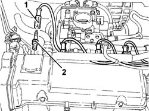
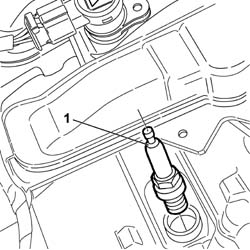
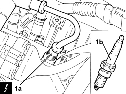

5510D10 spark plugs - r+r
- Path
- Procedures > 55 ELECTRICAL EQUIPMENT > 5510 ENGINE IGNITION > 5510D spark plugs and lead > 5510D10 spark plugs - r+r
- Kind
- repair procedure (removal / refitting; the operation number is the code)
- Applies to
- engines: 1.2 8v, 1.4 8v, 1.6 16v; all production periods
- Interactive page
- https://sloeber94.github.io/elrnDB-fDbl/en/#/2584902
Applies to: engines: 1.2 8v; all production periods
 Removing
Removing
 Refitting
RefittingDisconnect the negative battery terminal.
Op. 1048A10 AIR FILTER ASSEMBLY - R.R.
1. Disconnect the spark plug high tension leads.
Blow air into the spark plug seats to remove any impurities present.
2. Unscrew the heater plugs and remove them.

Applies to: engines: 1.2 8v; all production periods
Refitting
RemovingCheck the state of the spark plugs and replace them, if necessary.
Tighten the spark plugs into their seats and tighten to torque.
Fastening | Component | dia | Value (daNm) | |
|---|---|---|---|---|
- | Spark plug | SPARK PLUGS | M14 x 1.25 | 2.7 |
Connect the spark plug high tension leads.
Op. 1048A10 AIR FILTER ASSEMBLY - R.R.
Connect the negative battery terminal.
Applies to: engines: 1.6 16v; all production periods
Removing
RefittingDisconnect the negative battery terminal.
Op. 5510C14 IGNITION COIL/S - R+R
Blow air into the spark plug housings and remove any impurities or traces of dirt.
1. With the engine cold, remove the spark plugs using an appropriate wrench.

Applies to: engines: 1.6 16v; all production periods
Check the state of the spark plugs and replace them, if necessary.
Applies to: engines: 1.6 16v; all production periods
Refitting
RemovingFit the spark plugs and tighten them to the recommended torque.
Fastening | Component | dia | Value (daNm) | |
|---|---|---|---|---|
1 | - | SPARK PLUGS | M14 x 1.25 | (Cylinder head side) 2.7 |
Op. 5510C14 IGNITION COIL/S - R+R
Connect the negative battery terminal.
Applies to: engines: 1.4 8v; all production periods
Removing
Refitting- Disconnect the negative battery terminal.
Op. 1048A10 AIR FILTER ASSEMBLY - R.R.
1. Disconnect the electrical connection (1a) and remove the spark plug (1b).
Description | Connector | |
|---|---|---|
1a | Ignition coil |

Applies to: engines: 1.4 8v; all production periods
Refitting
Removing- Place the spark plug in position, tighten it to the recommended torque and connect the electrical connection.
Value daNm | Fastening | Component | dia | |
|---|---|---|---|---|
- | 2.2 ÷ 3.0 | - | Spark plugs | M14 |
- Connect the negative battery terminal.
Topics linked from this page (3)
Topics that link to this page (27)
- B10 ENGINE DOES NOT START / UNDER NO CIRCUMSTANCES
- B13 ENGINE STARTS WITH DIFFICULTY'
- B20 ENGINE STARTS, AND CUTS OUT STRAIGHT AWAY
- D01 ENGINE NOT RUNNING SMOOTHLY / (HESISTANT)
- D02 ENGINE NOT RUNNING SMOOTHLY / (LOSING POWER)
- D03 ENGINE NOT RUNNING SMOOTHLY / (IRREGULAR OPERATION)
- D05 ENGINE DOES NOT PRODUCE BEST PERFORMANCE
- D10 ENGINE IDLE IRREGULAR
- X01 EXCESSIVE FUEL CONSUMPTION
- X05 EXCESSIVE OIL CONSUMPTION
- Z54 MISFIRE ERROR IN ONE CYLINDER
- 0010K40 40,000km service coupon, emission control versions
- 0010K80 80,000km service coupon - emission control versions
- 0010M20 120,000km service coupon, emission control versions
- 0010M21 120000 km service coupon for emission control versions with air conditioner
- 0010M60 160,000km service coupon - emission control versions
- 0510A10 cylinder compression - check for loose spark plugs or injectors
- 1016B20 lh cylinder head extension - replace gasket
- 1016B24 rh cylinder head extension - replace gasket
- 1016C10 cylinder head - r + r and replace gasket
- 1020D12 front crank shaft oil seal cover - r + r and replace seals
- 1020D18 front crank shaft cover oil seal - replace
- 1032B10 toothed timing belt - r + r for timing adjustment or replacement
- 1032B46 toothed drive pulley - r + r
- 1032B52 toothed driven pulley (one) - r + r
- 1032C18 mobile timing system tensioner - r + r for 24 valve engines
- 1032D34 timing system guard assemblies - r + r